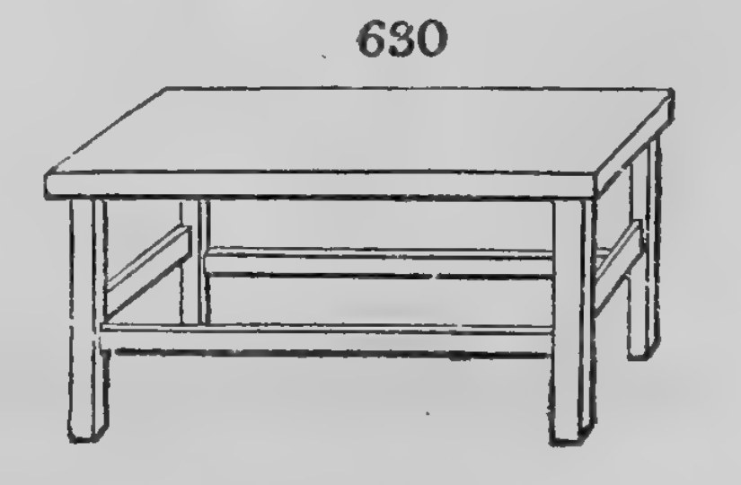

La enciclopedia de Loudon: muebles del común, explicados para quien los hace
John Claudius Loudon · Londres, 1833 · En dominio público
En 1833, un paisajista escocés publicó un libro de más de mil páginas para que cualquiera pudiera entender cómo se proyecta y se amuebla una casa.
El libro
An Encyclopaedia of Cottage, Farm, and Villa Architecture and Furniture. John Claudius Loudon. Londres: Longman, 1833. Edición consultada: nueva edición con suplemento, Londres, Longman, Brown, Green, and Longmans, 1842, 1306 p.
No era un tratado para arquitectos: estaba pensado para el que vive en la casa y para el carpintero de pueblo que la amuebla. Recorre la vivienda de punta a punta, del cottage del trabajador rural a la villa, y la acompaña con más de dos mil grabados de más de cincuenta colaboradores: arquitectos, constructores, tapiceros, ebanistas y paisajistas.
El prefacio explica por qué. Loudon sostiene que las profesiones nacieron como saberes guardados por unos pocos, y que todo conocimiento guardado como misterio queda estancado. Su libro quiere hacer de la arquitectura doméstica un saber común. Cuenta, además, que algunos arquitectos se quejaron porque, al abrir el oficio a cualquiera, les perjudicaba el negocio. Casi dos siglos después, es la misma idea que defiende el ebanista Hernán Costa cuando dice que transmitir el conocimiento es un acto de libertad.
Lo que le sirve a un carpintero
Lo más valioso está en los capítulos de muebles para el cottage: mesas, camas, alacenas, bancos y banquetas pensados para hacerse con poco gasto y en «cualquier madera común», a mano de un carpintero del lugar. Loudon no los propone como piezas de lujo, sino como muebles honestos, y cada uno lleva un comentario sobre su uso, su costo y su construcción.
De ahí sale el plano que estamos redibujando: la banqueta para chicos de la figura 630, en la página 315, de cuatro patas y travesaños a dos alturas. En la misma lámina está la figura 623, una banqueta redonda de tres patas que descartamos: con las patas rectas, vuelca si se carga en el borde entre dos patas, a cualquier escala. Ese descarte también es parte de la lección.

Figura 630, p. 315 de la edición de 1842. Dominio público.
Cómo leerlo
El libro está en dominio público. Se lee como lo que es, una enciclopedia: no de corrido, sino buscando. Pero quien busque encuentra lo que pocos libros de su época ofrecen: muebles del común, explicados para el que los va a hacer.
Dónde está. El ejemplar que consultamos pertenece a la biblioteca del Getty Research Institute, en Los Ángeles, que lo digitalizó junto con Internet Archive. Se lee y se descarga entero, gratis:
Casa chica de campo, típica del trabajador rural o del artesano en la Inglaterra del siglo XIX.
Villa
Casa de campo amplia, de familia acomodada, con jardín.
Grabado
Imagen impresa a partir de una plancha tallada, en madera o en metal. En este libro, los dibujos de casas y muebles.
Dominio público
Obra cuyos derechos de autor vencieron: se puede reproducir, traducir y difundir, respetando el nombre del autor.
Personas
John Claudius Loudon (1783–1843)
Paisajista, botánico y editor escocés, radicado en Londres. Dirigió The Gardener's Magazine y escribió varias enciclopedias prácticas, de jardinería, agricultura, plantas y árboles, además de esta de arquitectura y mobiliario.
Hernán Costa
Ebanista de Buenos Aires, ex luthier. Fabrica sus propios cepillos y sostiene una escuela de ebanistería gratuita en línea.